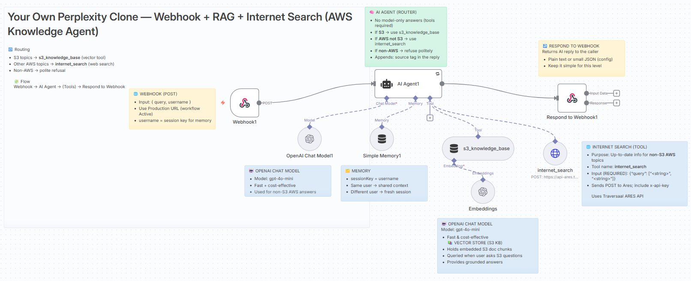
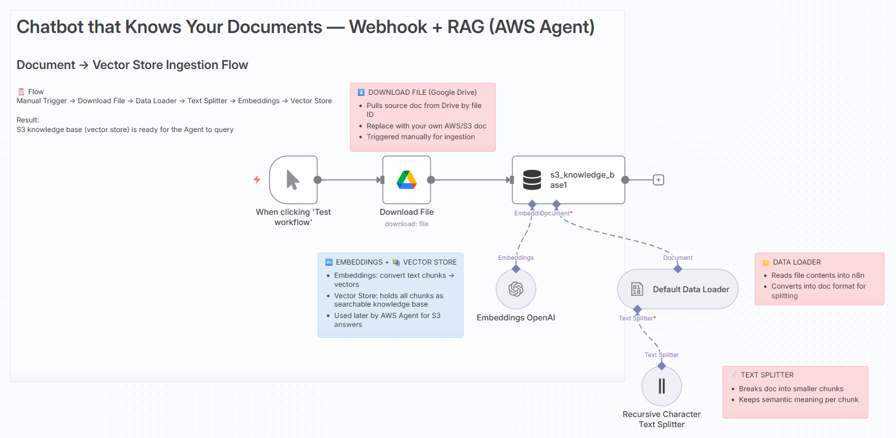

🛰️ Build Your Own Perplexity Clone
🔀 Workflow: Build Your Own Perplexity Clone
This blog contains the Webhook + RAG + Internet Search workflow for n8n.
It extends 301 by adding a web search fallback for non-S3 AWS questions, while still using a vector store (RAG) for S3 queries, and politely refusing non-AWS topics.
✨ Overview
This workflow demonstrates tool-routed answering inside an n8n Agent:
- 📦 S3 questions → RAG (vector store built from your S3 docs)
- 🌐 Other AWS questions → Internet Search (up-to-date info)
- 🚫 Non-AWS → respectful refusal
Learners see how an agent can classify, choose tools, and ground answers.
🔄 How It Works
Ingestion (one-time / as needed)
graph LR
MT["🖱️ Manual Trigger"] --> GD["⬇️ Google Drive: Download File"]
GD --> DL["📂 Data Loader"]
DL --> TS["📄 Text Splitter"]
TS --> EM["🔤 Embeddings"]
EM --> VS["📚 Vector Store (S3 KB)"]
Runtime (per request)
graph LR
WB["🌐 Webhook (POST)"] --> AG["🧠 AI Agent (Router)"]
AG --> MEM["💾 Memory (sessionKey = username)"]
AG --> LLM["🤖 OpenAI Chat Model"]
AG --> S3["📦 s3_knowledge_base (RAG)"]
AG --> NET["🌐 internet_search (HTTP Tool)"]
AG --> RSP["↩️ Respond to Webhook"]
- Webhook receives
{ query, username }. -
AI Agent classifies:
-
If S3 → query s3_knowledge_base (RAG) and answer.
- If AWS but not S3 → call internet_search and answer from results.
- If non-AWS
-
→ refuse.
-
Memory keeps context per
username. - Respond to Webhook returns the final answer.
🏛️ Architecture


🛂 Inputs (JSON Body)
query(string, required) — user question.username(string, recommended) — stable ID for memory.
Example
{
"query": "What's the difference between S3 Standard and S3 Glacier?",
"username": "demo-user-1"
}
📤 Output
- HTTP 200 with the agent’s answer.
-
Replies indicate source:
-
(Answer based on S3 knowledge base)
- (Answer enriched with Internet Search results)
- (Refusal: non-AWS topic)
⚙️ Setup
- Import
perplexity-clone.jsoninto n8n Cloud. -
Credentials
-
🔑 OpenAI (for the Agent’s LLM)
- 🔑 Google Drive (document download for S3 KB)
-
🔑 Internet Search tool (set
x-api-keyheader in the HTTP Request Tool) -
Activate the workflow and copy the Production Webhook URL.
- (Optional) Update Google Drive → fileId to your own S3 reference doc and run the Manual Trigger to rebuild the vector store.
✅ Tip: Keep temperature low (0.1–0.2) in the OpenAI node so the agent follows tool rules reliably.
🧪 Try It
Option A — Google Colab (Recommended)
- Open the instructor’s Colab: Webhook Client (Colab)
- Click Copy to Drive to make it editable.
- In n8n, Activate this 401 workflow and copy the Production Webhook URL (not the Test URL).
- In your Colab copy, replace the webhook variable (
urlorWEBHOOK_URL) with the Production URL. -
Run all cells. Try:
-
S3 (RAG expected): “How do I enable S3 versioning?”
- AWS non-S3 (Search expected): “What is AWS Lambda?”
- Non-AWS (Refusal): “Tell me about Paris.”
💡 Use the same
usernameto observe memory continuity.
Option B — cURL
WEBHOOK_URL="https://<your-n8n>/webhook/<id>" # Production URL
curl -X POST "$WEBHOOK_URL" \
-H "Content-Type: application/json" \
-d '{"query":"What is AWS Lambda?","username":"demo-user-1"}'
Option C — Postman
- New POST → Production Webhook URL
- Body → raw → JSON:
json
{ "query": "How do I enable S3 versioning?", "username": "demo-user-1" }
- Send → view response.
🧠 Teaching Notes
- Routing pattern: Students see S3 → RAG vs other AWS → search.
- Guardrails: Non-AWS questions are politely declined.
- Grounding: Answers always cite source mode in the closing tag.
- Maintainability: Docs can be refreshed without changing the runtime flow.
🩹 Troubleshooting
- Refuses AWS question: Ensure tool names in the Agent match node names (
s3_knowledge_base,internet_search) and the Internet Search API key is set. - Schema errors: Internet Search expects
{"query": ["..."]}(array of strings). The S3 tool expects{"query": "..."}(string). - No response / 404: Workflow may not be Active; use Production webhook URL.
📚 References
- 📖 Amazon S3 Getting Started Guide
- 📖 n8n — Simple Vector Store node
- 📖 n8n — RAG in n8n
- 📖 n8n — Http Request node
- ⬢ traversaal.ai — Ares API Documentation
Don’t forget to check out our Agentic AI System Design for PMs course on Maven if you are interested to be a part of something bigger.

👉 These resources expand on the workflows here and show how to apply AI + n8n in real projects.